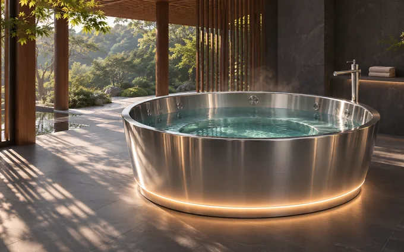
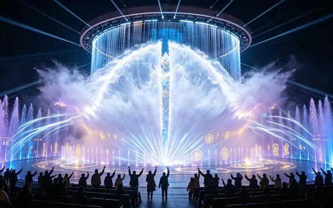
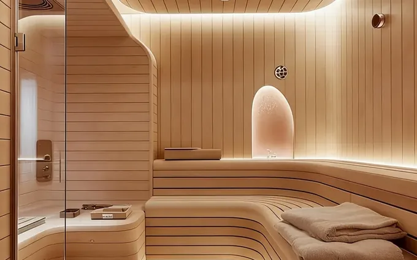

01 / STAINLESS STEEL
FOUR COLLECTIONS
Explore the collections

01 / YUANWANG
Stainless steel pools
Welded vessels, suite pools and custom finishes.
Explore collection ↗
02 / YUANWANG
Signature hot spring experiences
Starlight, sculptural bathing and immersive rooms.
Explore collection ↗
03 / YUANWANG
Water & light shows
Digital waterfalls, water stages and programmable effects.
Explore collection ↗
04 / YUANWANG
Thermal rooms & controls
Sauna, steam, ice rooms and local controls.
Explore collection ↗01 / PRODUCT FAMILIES
02 / TRANSPARENT ACRYLIC
03 / SCULPTURAL BATHING
04 / IMMERSIVE 5D
05 / WATER SHOWS
06 / THERMAL ROOMS
07 / WATER TREATMENT
08 / AUTOMATION
09 / GEOTHERMAL
DESIGN + ENGINEERING
02 / SPECIFICATION WORKFLOW
Technical selections from our catalogues
Pool materials and finishes
The stainless-steel manual describes 304 and 316/316L options. Selection depends on source-water analysis, operating temperature, cleaning regime and site exposure. Specify the finish, weld inspection and passivation in the fabrication package.
Pool-edge and access details
The manual illustrates stainless steel paired with stone, timber, glass, mosaic, microcement and acrylic. Coordinate movement joints, fixing, drainage and cleaning access before approving details.
Acrylic pool concepts
The themed-product manual includes rooftop cantilever concepts, cliffside viewing pools, cylindrical private baths, boat-shaped pools and illuminated ring pools. Design review covers support geometry, access, interfaces and cleaning.
Immersive water and lighting
The company catalogues describe digital waterfalls, blue-glow water scenes, floating shows and themed storm effects. Coordinate lighting, media, water jets and controls around the operating sequence and wet-area layout.
PLC and control cabinet package
The controls catalogue includes cabinet, local-control and module configurations. A project package can specify sensor and actuator lists, I/O, alarms, interlocks, local operation and acceptance checks.